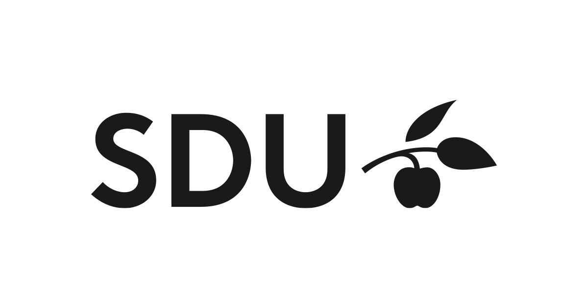

Mit navn er Niki Piskorczyk,Jeg går på Zealand Køge, hvor jeg er i gang med at blive uddannet til Multimediedesigner.

Mine interesser varier mellem Photoshop, Gaming og generelt Adobe programmer som Illustrator, hvor jeg har mest erfaring i Photoshop.
Tidligere uddannelser har været Københavns Mediegymnasium, hvor jeg blev student, og begyndte at få kendskab til Photoshop, Adobe XD og generelt Teknikfag.
Københavns Mediegymnasium 2016-2019, hvor jeg blev student, og har arbejdet i forskellige 3d programmer som Autodesk Maya, og lidt på Adobe XD,Illustrator, InDesing & Photoshop.
Syddansk Universitet 2019-2020, hvor jeg studererde International virksomhedskommunikation på Engelsk, hvor det var meget om at lave projektskrivning, organisationsanalyser og forbrugsanalyse.

Zealands Ervhersakademi 2020-2022, hvor jeg studerer Multimediedesigner,som uddyber sig i digitalt design, udvikling og kodning..